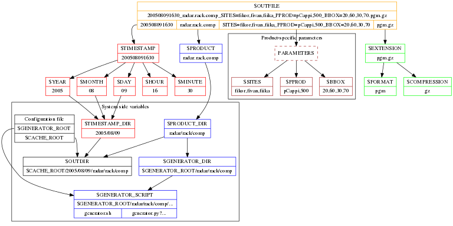

NutShell 0.2 documentation
previous
|
modules
|
index
NutShell Variables
¶
Variable parsing scheme
¶

Table Of Contents
Overview
Using NutShell
Product requests
Commands
Configuration file
Product generators
Variable parsing scheme
NutShell Variables
Variable parsing scheme
Search
Enter search terms or a module, class or function name.